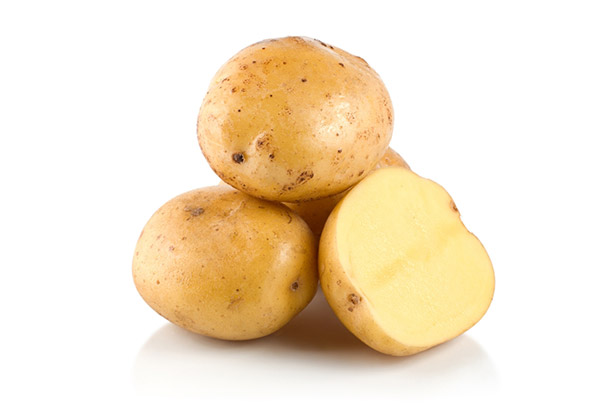

The potato is a starchy tuber of the plant Solanum tuberosum and is a root vegetable native to the Americas. The plant is a perennial in the nightshade family Solanaceae.
Wild potato species can be found throughout the Americas, from Canada to southern Chile. The potato was originally believed to have been domesticated by Native Americans independently in multiple locations, but later genetic studies traced a single origin, in the area of present-day southern Peru and extreme northwestern Bolivia. Potatoes were domesticated there approximately 7,000–10,000 years ago, from a species in the Solanum brevicaule complex. In the Andes region of South America, where the species is indigenous, some close relatives of the potato are cultivated.
Potatoes were introduced to Europe from the Americas in the second half of the 16th century by the Spanish. Today they are a staple food in many parts of the world and an integral part of much of the world's food supply. As of 2014, potatoes were the world's fourth-largest food crop after maize (corn), wheat, and rice. Following millennia of selective breeding, there are now over 5,000 different types of potatoes. Over 99% of potatoes presently cultivated worldwide descended from varieties that originated in the lowlands of south-central Chile. The importance of the potato as a food source and culinary ingredient varies by region and is still changing. It remains an essential crop in Europe, especially Northern and Eastern Europe, where per capita production is still the highest in the world, while the most rapid expansion in production over the past few decades has occurred in southern and eastern Asia, with China and India leading the world in overall production as of 2018.
Like the tomato, the potato is a nightshade in the genus Solanum, and the vegetative and fruiting parts of the potato contain the toxin solanine which is dangerous for human consumption. Normal potato tubers that have been grown and stored properly produce glycoalkaloids in amounts small enough to be negligible to human health, but, if green sections of the plant (namely sprouts and skins) are exposed to light, the tuber can accumulate a high enough concentration of glycoalkaloids to affect human health.